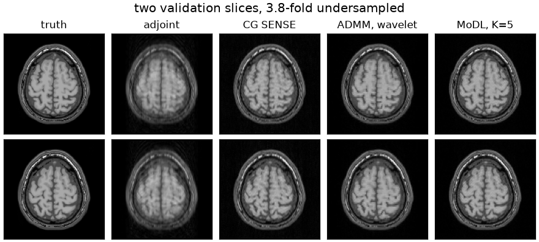

Note
Go to the end to download the full example code.
MoDL, on BART’s ADMM#
An unrolled network for undersampled Cartesian SENSE: a convolutional denoiser in the proximal step of BART’s alternating-direction iteration, trained end to end against fully sampled images.
MoDL [1] writes a reconstruction as an alternation between a learned denoiser and a data-consistency step, and trains the denoiser through it. As published the alternation is half-quadratic splitting, which is
the second line a conjugate-gradient solve of \((A^H A + \lambda) x = A^H y + \lambda z^{k}\). The alternating direction method of multipliers [2] is the same splitting with a dual variable \(u\) carried along:
MoDL is therefore this iteration with \(u\) fixed at zero. The dual variable accumulates the mismatch between the data-consistent and the denoised iterate, so that a fixed point of the iteration solves the constrained problem rather than the penalized one.
The iteration itself is BART’s. bartorch.optim.ADMMBlock implements
admm.c’s step, including the conjugate-gradient x-update that MoDL’s own
implementation writes out, and bartorch.learning.Unrolled applies it
repeatedly. The network supplies the proximal step, through
bartorch.priors.ImplicitPrior; the penalty parameter \(\rho\) is a
parameter of the block and is trained with the network’s weights.
import csv
from pathlib import Path
import brainweb_dl
import lightning
import numpy as np
import torch
import torchio
from brainweb_dl import get_mri
from monai.metrics import PSNRMetric, SSIMMetric
from torch.utils.data import DataLoader
import bartorch
import bartorch.tools as bt
from bartorch import learning, linop, optim, priors
SIZE = 128
COILS = 8
SLICES = 32 # axial slices taken from the volume
ITERATIONS = 5 # unrolled steps, MoDL's K
EPOCHS = 15
_ = torch.manual_seed(0)
/opt/hostedtoolcache/Python/3.12.14/x64/lib/python3.12/site-packages/torch/jit/_script.py:1643: FutureWarning: `torch.jit.interface` is deprecated. Please use `torch.compile` instead.
warnings.warn(
Images#
Axial slices of one BrainWeb subject, each converted into a \(T_1\)-weighted spin-echo image as in From k-space to image and given a smooth phase, so that no step below depends on the image being real. The slices are split into training and validation sets by position rather than at random: the first twenty-four slices train and the last eight validate.
One subject, twenty-four slices and a single sampling pattern constitute a phantom. The weights obtained below are not expected to generalize, and the page demonstrates the construction rather than a trained model.
train_images = images[:24]
valid_images = images[24:]
print(f"{len(train_images)} slices to train on, {len(valid_images)} to validate on")
24 slices to train on, 8 to validate on
Acquisition#
Eight channels of BART’s analytical head coil, and a variable-density random undersampling of the phase encodes with a fully sampled k-space centre. The pattern is shared by every slice, so a single operator serves the whole dataset; a pattern that differs between items requires one operator per item.
ACCELERATION = 4
CENTRE = 8 # phase encodes always acquired
sensitivities = bt.coils(t=bt.grid(D=(SIZE, SIZE, 1)), n=COILS)[:, 0]
sensitivities = sensitivities / bartorch.rss(sensitivities, axes=(0,), keepdim=True)
density = torch.exp(-0.5 * ((torch.arange(SIZE) - SIZE / 2) / (SIZE / 6)) ** 2)
density = density / density.sum() * (SIZE / ACCELERATION)
lines = torch.rand(SIZE, generator=torch.Generator().manual_seed(1)) < density
lines[SIZE // 2 - CENTRE // 2 : SIZE // 2 + CENTRE // 2] = True
pattern = lines.to(torch.complex64)[:, None].expand(SIZE, SIZE).contiguous()
A = linop.CartesianSense(sensitivities, (SIZE, SIZE), pattern=pattern)
print(f"{int(lines.sum())} of {SIZE} phase encodes, {SIZE / int(lines.sum()):.1f}-fold")
print(f"A: {A.ishape} -> {A.oshape}")
34 of 128 phase encodes, 3.8-fold
A: (128, 128) -> (8, 128, 128)
The measured k-space of a slice is \(A x\) with additive complex
Gaussian noise. An operator is constructed for a single image, so a batch is
applied item by item; the iteration blocks in bartorch.optim do the
same internally, and the network below therefore accepts a batch where the
operator does not.
NOISE = 0.005
def measure(images, generator=None):
"""Simulate k-space for each image, with the adjoint reconstruction to start from."""
x = torch.stack(list(images))
y = torch.stack([A(item) for item in x])
y = y + NOISE * torch.randn(y.shape, dtype=torch.complex64, generator=generator)
return x, y, torch.stack([A.H(item) for item in y])
Dataset#
torchio holds the images and augments them. Its ScalarImage requires
a real tensor of shape (channels, width, height, depth);
bartorch.learning.as_real() and as_complex()
convert between that layout and a complex image, the real and imaginary parts
becoming the two channels and a slice a volume one voxel deep.
Augmentation is the reason to prefer it to a plain list. A transform is drawn per subject and applied to every image of that subject, so an image and anything that must remain registered with it – coil sensitivities, parameter maps – are transformed consistently. Here each subject holds one image, and the transform is a flip and a rotation of at most eight degrees, which preserve the tissue statistics the denoiser is trained on while varying the orientation.
augmentation = torchio.Compose(
[
torchio.RandomFlip(axes=(0,), flip_probability=0.5),
torchio.RandomAffine(scales=0, degrees=(0, 0, 0, 0, -8, 8), translation=0),
]
)
def subjects(images):
return [
torchio.Subject(image=torchio.ScalarImage(tensor=learning.as_real(image)[..., None]))
for image in images
]
def collate(batch):
"""Collate subjects into images, simulated k-space and adjoint reconstructions."""
return measure(learning.as_complex(subject["image"][torchio.DATA][..., 0]) for subject in batch)
train_loader = DataLoader(
torchio.SubjectsDataset(subjects(train_images), transform=augmentation),
batch_size=2,
shuffle=True,
collate_fn=collate,
)
valid_loader = DataLoader(
torchio.SubjectsDataset(subjects(valid_images)), batch_size=2, collate_fn=collate
)
Network#
Four objects:
deepinv’sDnCNN[3], a residual convolutional denoiser of the family MoDL’s own five-layer network belongs to. It is annn.Moduleoperating on real images.bartorch.learning.Denoiser, which converts between that layout and a complex image: two channels for the real and imaginary parts, the batch axes folded, and each image scaled to unit peak modulus around the call.bartorch.priors.ImplicitPrior, which presents the result as a regularization term.bartorch.learning.Unrolled, which applies the ADMM stepITERATIONStimes. A single block is shared by every iteration, the weight sharing MoDL specifies, andrhois made differentiable, MoDL’s learned \(\lambda\).
alpha=1.0 disables BART’s over-relaxation, so that the step is the
iteration written above; cg_maxiter is the x-update budget, MoDL’s ten.
from deepinv.models import DnCNN
def modl():
"""Construct an unrolled network and return it with the block it shares."""
network = DnCNN(in_channels=2, out_channels=2, depth=5, pretrained=None)
denoiser = learning.Denoiser(network, channels=2)
block = optim.ADMMBlock(priors.ImplicitPrior(denoiser), rho=0.05, alpha=1.0, cg_maxiter=10)
block.rho.requires_grad_()
return learning.Unrolled(block, iterations=ITERATIONS), block
model, block = modl()
learned = sum(p.numel() for p in model.parameters() if p.requires_grad)
print(f"{learned} learned values, shared by all {ITERATIONS} iterations")
print(f"rho starts at {float(block.rho.detach()):.3f}")
113155 learned values, shared by all 5 iterations
rho starts at 0.050
Training#
lightning runs the loop. The module is the ordinary supervised one: a
forward pass, a loss against the fully sampled image, and metrics from
monai. The loss is taken on a tensor and requires nothing of the
reconstruction that produced it.
psnr = PSNRMetric(max_val=1.0)
ssim = SSIMMetric(spatial_dims=2, data_range=1.0)
class Reconstruction(lightning.LightningModule):
"""Supervised training of an unrolled network against fully sampled images."""
def __init__(self, model, lr=1e-3):
super().__init__()
self.model = model
self.lr = lr
def forward(self, y, start):
return self.model(y, A, x0=start)
def training_step(self, batch, index):
x, y, start = batch
loss = (self(y, start) - x).abs().square().mean()
self.log("loss", loss, prog_bar=True)
return loss
def validation_step(self, batch, index):
x, y, start = batch
out = self(y, start).abs()[:, None]
self.log("psnr", psnr(out, x.abs()[:, None]).mean(), prog_bar=True)
self.log("ssim", ssim(out, x.abs()[:, None]).mean(), prog_bar=True)
def configure_optimizers(self):
return torch.optim.Adam(self.parameters(), lr=self.lr)
trainer = lightning.Trainer(
max_epochs=EPOCHS,
accelerator="cpu",
logger=False,
enable_checkpointing=False,
enable_model_summary=False,
gradient_clip_val=1.0,
)
trainer.fit(Reconstruction(model), train_loader, valid_loader)
print(f"rho ended at {float(block.rho.detach()):.3f}")
GPU available: False, used: False
TPU available: False, using: 0 TPU cores
💡 Tip: For seamless cloud logging and experiment tracking, try installing [litlogger](https://pypi.org/project/litlogger/) to enable LitLogger, which logs metrics and artifacts automatically to the Lightning Experiments platform.
/opt/hostedtoolcache/Python/3.12.14/x64/lib/python3.12/site-packages/lightning/pytorch/utilities/_pytree.py:21: `isinstance(treespec, LeafSpec)` is deprecated, use `isinstance(treespec, TreeSpec) and treespec.is_leaf()` instead.
/opt/hostedtoolcache/Python/3.12.14/x64/lib/python3.12/site-packages/lightning/pytorch/trainer/connectors/data_connector.py:434: The 'val_dataloader' does not have many workers which may be a bottleneck. Consider increasing the value of the `num_workers` argument` to `num_workers=3` in the `DataLoader` to improve performance.
/opt/hostedtoolcache/Python/3.12.14/x64/lib/python3.12/site-packages/lightning/pytorch/trainer/connectors/data_connector.py:434: The 'train_dataloader' does not have many workers which may be a bottleneck. Consider increasing the value of the `num_workers` argument` to `num_workers=3` in the `DataLoader` to improve performance.
`Trainer.fit` stopped: `max_epochs=15` reached.
Epoch 14/14 ━━━━━━━━━━━━━━━━━ 12/12 0:00:15 • 0:00:00 0.79it/s loss: 0.000 psnr:
32.696 ssim:
0.885
rho ended at 0.027
Results#
Three reconstructions of the same k-space serve as references: the adjoint, which the network is started from; a conjugate-gradient SENSE fit, which minimizes the data term alone; and the same ADMM iteration with a wavelet penalty in place of the denoiser, run for fifty iterations rather than five.
torch.manual_seed(7)
truth, kspace, adjoint = measure(valid_images)
with torch.no_grad():
learnedrecon = model(kspace, A, x0=adjoint)
cg = torch.stack([optim.cg(item, A, maxiter=30) for item in kspace])
wavelet = torch.stack(
[
optim.admm(item, A, priors.Wavelet(axes=(-1, -2), weight=0.002), maxiter=50, rho=0.1)
for item in kspace
]
)
def quality(estimate):
"""PSNR and SSIM of a batch of magnitudes against the reference magnitudes."""
a, b = estimate.abs()[:, None], truth.abs()[:, None]
return float(psnr(a, b).mean()), float(ssim(a, b).mean())
rows = {
"adjoint": adjoint,
"CG SENSE": cg,
"ADMM, wavelet": wavelet,
f"MoDL, K={ITERATIONS}": learnedrecon,
}
for name, estimate in rows.items():
made = quality(estimate)
print(f"{name:>16} PSNR {made[0]:5.2f} dB SSIM {made[1]:.3f}")
adjoint PSNR 23.71 dB SSIM 0.679
CG SENSE PSNR 29.69 dB SSIM 0.681
ADMM, wavelet PSNR 31.64 dB SSIM 0.898
MoDL, K=5 PSNR 32.70 dB SSIM 0.884
The table is not a comparison of methods. Fifteen epochs over twenty-four slices of one subject, set against a wavelet penalty of fifty iterations with a manually chosen weight, supports no conclusion about either on measured data. A quantitative comparison would require many subjects, validation on subjects excluded from training, and a fixed reconstruction time.

Differentiating a deeper stack#
Five iterations of a two-dimensional encoding record a graph of modest size. Ten iterations of a three-dimensional non-Cartesian encoding do not, and the memory is dominated by the denoiser’s activations: the backward pass of an operator is a further application of that operator and stores nothing growing with the iteration count, whereas a convolutional network stores every activation, once per iteration.
Unrolled provides two alternatives, neither of
which changes the forward value
(Differentiation through reconstruction):
detach=Truestarts each iteration from a detached state, so that the graph spans one iteration. With a loss on each image yielded bysteps(), this is greedy per-iteration training, whose memory is independent of the iteration count.checkpoint=Trueretains the states between iterations and recomputes the interior of a step during the backward pass. The gradient is the end-to-end one and each block is applied twice.
Pretraining the denoiser in isolation, then greedy per-iteration training, then end-to-end fine-tuning with checkpointing, is the staged schedule reported for a fully three-dimensional unrolled reconstruction [4].
greedy, greedy_block = modl()
greedy.detach = True
optimizer = torch.optim.Adam(greedy.parameters(), lr=1e-3)
x, y, start = measure(train_images[:2], torch.Generator().manual_seed(3))
for step in range(3):
optimizer.zero_grad()
# One loss per iteration, each propagating only into the step that produced it.
for image in greedy.steps(y, A, x0=start):
(image - x).abs().square().mean().backward()
optimizer.step()
print(f"greedy: rho {float(greedy_block.rho.detach()):.3f}")
greedy: rho 0.047
The gradient of rho with checkpointing is compared below with the
gradient recorded over the whole stack. rho enters every iteration and
the conjugate-gradient solve of each x-update, so its gradient propagates
through all of them.
x, y, start = measure(valid_images[:1])
made = []
for recompute in (False, True):
stack = learning.Unrolled(block, iterations=ITERATIONS, checkpoint=recompute)
for parameter in stack.parameters():
parameter.grad = None
(stack(y, A, x0=start) - x).abs().square().mean().backward()
made.append(float(block.rho.grad))
print(f"rho's gradient: {made[0]:.6g} recorded, {made[1]:.6g} recomputed")
rho's gradient: 0.000484658 recorded, 0.000484658 recomputed
A third alternative is not to unroll. bartorch.optim.FixedPoint
drives the block to its fixed point and differentiates there by solving the
adjoint fixed-point equation, so that its memory is that of a single step
irrespective of the iteration count. This is a deep-equilibrium model [5], of
which the stack above is the truncated form.
References#
Total running time of the script: (4 minutes 33.684 seconds)